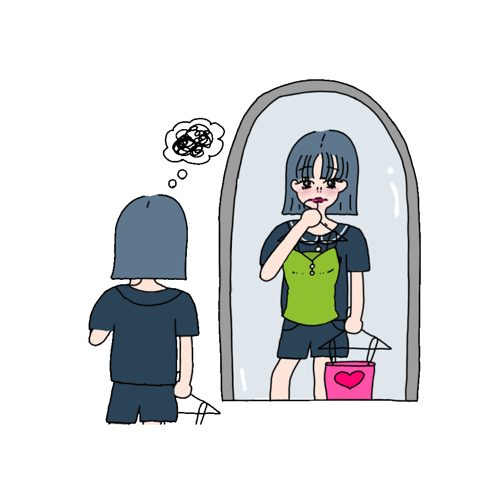

1/3
Q. 今のお仕事になるタイミングが“人生の転機”だとおっしゃっていましたが、このお仕事をされる前まではどんなことをされていたのですか？
特別なことは何もしていなくて、普通に大学を卒業して、まずアパレルの会社に入るんですよ。わかるかな、Marimekkoの会社。
―Marimekko！わかりますわかります。
当時Marimekkoが個人的に好きでね、好きな服を着て働けると思ってたの。だけど入ってみたらその会社が持ってる私が思ってたのとは違うような、おばさんのブランドで働かなきゃ行けなくて（笑）。その時私は22,3でしょ？やっぱ若かったから尚更。思ってたのと違うなって感じて2年働いて辞めちゃった。全然好きでもない服着て、話す相手はみんなおばちゃんで、そこで販売員してたらだんだん息苦しくなっちゃった。
―確かに。好きだと思って始めたからこそちょっとしんどいですね。
そうそう。で、その時雑貨が好きだったからCLASKAっていう雑貨屋さんが新しい形態の雑貨屋を出すってことで、そこで働くんですよね。そしたらそこも思ってたクールな感じとは違くて。まあここでも自分の好きなことをやりたいからって辞めちゃった。
―そこも長くは続かずって感じだったんですね。
そうなの。そのあとは青山のアンティーク家具屋さんでまた2年ぐらいだったね。家具ってやっぱり楽しいんだけど自分にあんまり向いてないなあって思って。
―何かそう思うきっかけとかがあったんですか？
なんかね、雑貨屋さんと家具屋さんで販売員して全部で６年間販売やってたことになるんだけど、家具屋さんの時に、あ、私販売員向いてないなって思ったの。私、結構人に興味はあるんだけど、人の思考にはそこまで興味がないのかも。なんかその人の好きにしたらいいじゃんって思っちゃう！（笑）だから結局あんまりお客さんのお手伝いできないなーって。
―なるほど、そういう理由があったんですね。
そうそう。で、結局そろそろ30歳ぐらいになるでしょ。もうそろそろ落ち着きたいなって思ってタウンワークとか開いたりして。表参道ヒルズに上で事務募集してますみたいなのがあったからそこで落ち着いて、結局７年間事務をしていました。それで今はここ030のカフェで働いてるっていうのがざっくりの経歴かな。
2/3
Q. Marimekkoは好きで就職されたとおっしゃっていましたが、いつ頃から就職を志望していたとかはありますか？
それがね、またちょっと面白くて、実は私高校・大学って７年間付き合ってた人がいたの。
―え〜！すごい！7年も！
長いでしょ（笑）。だから大学卒業したらこの人と結婚するんだーと思ってたの。それで大学4年生の春とかだったかな？彼に、「あなたと結婚するつもりだから私就活しないよ」って言ったの。そしたら彼が「え？俺結婚するつもりないよ」って言ってきて。あれ？ってなるでしょ。
―それはびっくりしますね、、
で、どうしようってなってたんだけど、その彼が「レイナちゃんは何が一番好きなの？」って聞いてくれて。それでMarimekkoって答えたのね。そしたら後日、「俺が全部履歴書とか作って送っておいたから」とか言ってきて！
―え！！すごい行動力！（笑）
今思うと笑っちゃうよね〜。それで結果もちゃんと受かってってことがあったのよ。その彼とは結局お別れしちゃうんだけど、しばらくずっと好きだったな〜。これも今考えるとある意味“人生の転機”になる部分かも。
―就職するきっかけになった大きな転機ですね。
今思うとそうかもしれないです。
―いつから服に興味を持ったとかはありますか？
んー、なんかね実は私小学4年生だったかな？その時からお化粧とかいつもしてたの。ませてたから（笑）。で、ほんとはメイクアップアーティストになりたかったのずっと。
―え〜！そうなんですね！
そう、だから高校卒業の時に母に、私メイクアップアーティストになりたいから専門学校に行きたいっていったの。そしたら母が昔の人だからさ、結婚する時に相手の親が専門学校卒だと嫌がるからちゃんと大学に出てほしいっていうの。
―なるほど。
まあ成績も悪くなかったから推薦もらってちゃんと大学に行ったのよ。で、就活の時にやっぱメイクしたいっていう気持ちももちろんあったんだけど、お母さんにそんな感じで言われてるもんだから、諦めて次に好きなのなんだろうって思ったら服だった。
―メイクや服に小さい頃から興味があったんですね！好きになったきっかけとかは何かあるんですか？
んーとね、うちの母がちょっと服ぐるいの人で。めちゃめちゃ服好きなんですよ。だから多分その影響っていうのが一番大きいと思います。
―なるほどなるほど！
もうほーんと、とにかく服が好きで子供の面倒見ずにラフォーレとかいってたような母親で。結構奇抜なんだけど。小さい時は授業参観とかで母親が派手なのすごいいやだった（笑）まあそんな母の影響もあって、服はずっと好きでいたかな。
―お母さんの影響が大きかったんですね。
大学の時なんかはほんとに服大好きで、コムデギャルソンとかトーがとかめちゃ服にお金かけてた気がする。ほら、これ私が大学の時の写真だけど、マルニのコートにトーガのパンツ、ギャルソンとこれもトーガのシャツとかね笑。
―わ〜ほんとだすごい！かわいい〜！！綺麗だしめちゃくちゃ似合ってます、、

結婚を断られた当時の彼氏から就職を後押ししてもらったことをきっかけに、自分の好きなことを追い求めて職を転々とするレイナさん。030に出会ったレイナさんは今何を感じているのだろうか
第２章 030との出会い ➡︎